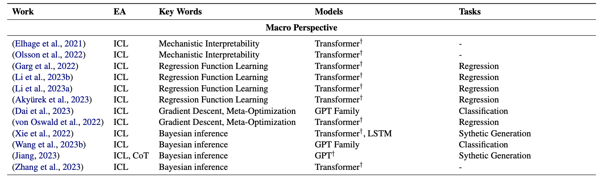

|
Hanqi Yan I'm a PostDoc at King's college London, supervised by Prof. Yulan He, where I am focusing on robust and reliable language models. I passed my PhD viva with no corrections after a great time in University of Warwick (2020.10-2024.04), advised by Prof. Prof. Yulan He and Dr. Lin Gui. I finished my M.S. at Peking University (2017-2020) and my B.E. at Beihang University (2013-2017). During Ph.D., I started my Causality Journey in visiting professor Kun Zhang affiliated with Causal Learning and Reasoning Group@CMU. Before Ph.D., I started my NLP journey in visiting professor Wenjie Li affiliated Natural Language Processing Group @PolyU Hong Kong. Email / CV / Scholar / Twitter / Github Strive not to be a success, but rather to be of value. -- Albert Einstein |
{kind=link}
Research SummaryMy research interests lie in the intersection of Machine Learning and Natural Language Processing, i.e., incorporating fundamental representation learning to enhance the interpretability and robustness of different NLP models.
|
Publication |
|
Large Language Model |
|
|
Mirror: A Multiple-perspective Self-Reflection Method for Knowledge-rich Reasoning
H. Yan, Q. Zhu, X. Wang, L. Gui, Y. He ACL24 Introduce a Navigator model to interact with the Reasoner by providing question-specific and diverse guidance in knowledge-rich self-reflection process without any supervision. |
|
|
Addressing Order Sensitivity of In-Context Demonstration Examples in Causal Language Models.
Y. Xiang, H. Yan, L. Gui, Y. He ACL-findings We attribute the order sensitivity of CausalLMs to the auto-regressive attention masks, which restrict each token from accessing information from subsequent tokens. Thereby leading to our proposed consistencey-based representation learning method in addressing this vulnerability of LLMs. |
|
|  |
The Mystery and Fascination of LLMs: A Comprehensive Survey on the Interpretation and Analysis of Emergent Abilities.
Y. Zhou, J. Li, Y.Xiang, H.Yan, L. Gui, Y. He Under Review From Macro perspective, Why In-Context Learning can learn Different Algorithms without gradient descent, e.g, Regression, Bayesian. |
|
Counterfactual Generation with Identifiability Guarantee
H. Yan, L. Kong, L. Gui, Y. Chi, Eric. Xing, Y. He, K. Zhang. Neurips23, 2023. We observed the pitfalls of LLMs in detecting and intervening the implicit sentiment, so we provide Identification guarantees for successful disentanglement of the content and style variables. This principled representations can shed light on the llm alignments, i.e., safe and moral generation. |
|
Self-Explainable Models |
|

|
Explainable Recommender with Geometric Information Bottleneck
H. Yan, L. Gui, M. Wang, K. Zhang and Y. He TKDE, 2023 To ease the humman annotation for rationales in Recommender, a prior from user-item interactions is incorporated into the textual latent factors for explaination generation. |
|
Hierarchical Interpretation of Neural Text Classification
H. Yan, L. Gui, M. Wang, K. Zhang and Y. He Computational Linguistics, 2022, Presented at EMNLP22. Unsupervised self-explanatory framework for document classification. It can extract word-, sentence-, and topic-level rationales explaining the document-level decision. |
|
Robustenss |
|

|
A Knowledge-Aware Graph Model for Emotion Cause Extraction
H. Yan, L. Gui, G. Pergola and Y. He ACL, 2021, Oral. Commonsense Knowledge, i.e., ConceptNet is applied as invariant feature to tackle the distribution shift and Position Bias. |

|
Counterfactual Generation with Identifiability Guarantee
H. Yan, L. Kong, L. Gui, Y. Chi, Eric. Xing, Y. He, K. Zhang. Neurips, 2023. Provide Identification guarantees for successful disentanglement of the content and style variables, further supports the intervention of latent attributes of the text. This principled representations can shed light on the constrained, i.e., safe and moral generation for large language models with noisy pertaining data. |
|
Addressing Token Uniformity in Transformers via Singular Value Transformation
H. Yan, Gui, Y. Y. He. UAI, 2022, Token uniformity implies more vanished dimensions in the embedding space. _SoftDecay_ is proposed to a range of transformer-based language models and improved performance is observed in STS evaluation and a range of GLUE tasks. |
|
|
Distinguishability Calibration to In-Context Learning
H. Li, H. Yan, Y. Li, L. Qian, Y. He and L. Gui. EACL, 2023 Token uniformity issue is still observed in in-context learning, we proposed an adaptor for more discriminative representation learning and improved performance is observed in fine-grained text classification tasks. |
Professional Activities |
|
Event Organiser: Co-Chair of AACL-IJCNLP (Student Research Workshop) 2022 Reviewers for NLP: , AACL24,EACL23', EMNLP22',23'24, ACL23'24', NAACL24', Reviewers for ML and AI: UAI23', AISTATS24', NEURIPS24', Neurocomputing, Knowledge and Information System, TOIS |
|
UC San Diego, NLP Group, 02/2024. Robust and Interpretable NLP via representation learning and Path Ahead Yale University, NLP Group 01/2024. Robust and Interpretable NLP via representation learning and Path Ahead Turing AI Fellowship Event, London, 03/2023, Distinguishability Calibration to In-Context Learning UKRI Fellows Workshop, University of Edinburgh, 04/2022. Interpreting Long Documents and Recommendation Systems via Latent Variable Models |
Basically
|
Reading List For Large Language Model
Induction Head_ contribute to In-context Learning Causality101 Debised Recommendation with Causality Identifiability101 in Causality |
|
Feel free to steal this website's source code. Do not scrape the HTML from this page itself, as it includes analytics tags that you do not want on your own website — use the github code instead. Also, consider using Leonid Keselman's Jekyll fork of this page. |